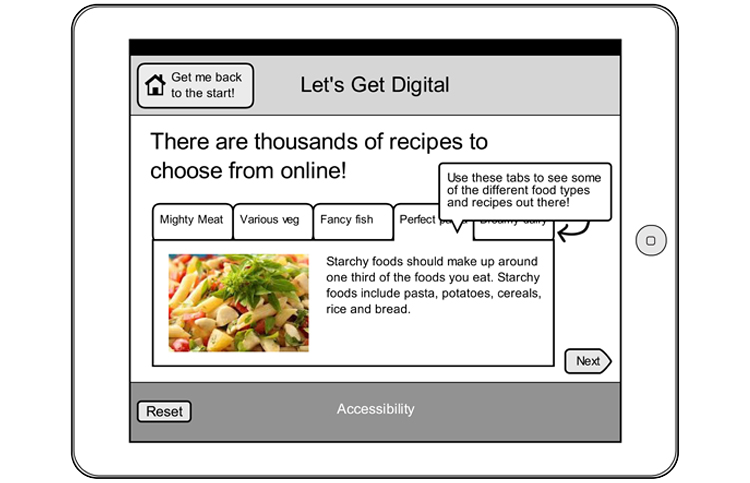
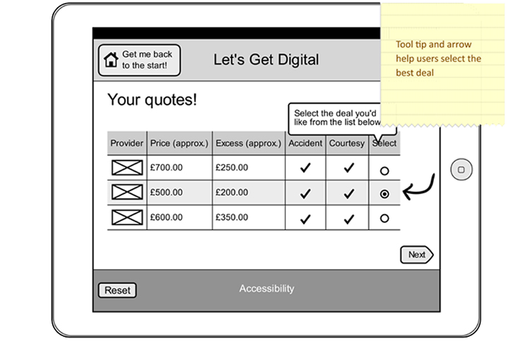

As part of the annual Get Online Week event, UK Online Centres wanted a digital interactive 'taster,' to encourage and inspire adults with low computer literacy to start using the Internet and subscribe to further courses run by UK Online.
I established objectives and requirements with the client, developed content, and created a series of wireframes to map the structure and flow of the interactive. A solution was developed that reflected common website interactions to make users familiar with typical functions such as drop-down menus, tabs, scrolling, and messaging.


The interactive comprised three stands of activity based around saving money online, keeping in touch, and eating healthily, that branched from an initial start screen. After each activity was completed, the user was prompted to try again or find out about further courses on the corporate website. The solution was created in a flat, illustrative style and built in HTML5 with a team of in-house developers and interaction designers.
Client: UK Online Centres
Date: June 2013
Tag: process flows, wireframes